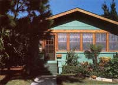
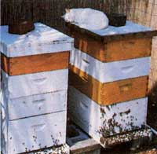
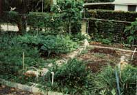

Urban Homesteading In Florida
A former Mother editor has discovered the good life in an unlikely place and shares it in this space, including alternative economics, hearth and home, food for thought, making plans.
By Jeanne Malmgren Cameron
March/April 1985
A former editor of this magazine has discovered the good life... in an exceedingly unlikely place!
by Jeanne Malmgren Cameron
In the spring of 1982, I left the staff of THE Mother Earth News to move to . . . no, not a wilderness home on the outskirts of civilization, but (gasp) The City! I suspect that at the time some of my colleagues thought I'd fall prey to the same old nine-to-five routine that I'd been encouraging MOTHER's readers to leave- but happily, that hasn't proved to be the case. Today, my husband, Jim, and I are living the kind of simple life that I had time only to write and dream about as a MOTHER editor. And we're doing it in the unlikely setting of a city of 250,000 people on Florida's densely populated Gulf Coast.
When I first arrived in the land of opulent condos and mushrooming mobile home parks, I was pretty wet behind the ears and loaded with the usual misconceptions about this much-maligned state. Jim, patient fellow that he is, took me under his spousal wing and immediately began my education in metropolitan homesteading, Florida-style. He had moved into his modest urban bungalow eight years earlier and had single-handedly turned the rather plain little spread into a veritable oasis. The backyard, once a sandy, sun-scorched parking area (complete with broken concrete chips and layers of coquina shells), had been transformed into two large organic gardens partially shaded by citrus trees. Jim had replaced the crabgrass "lawn" with heat-resistant St. Augustine turf and softened the stark outlines of the house by planting a colorful landscape of native tropicals.
Inside the bungalow, he had laid new kitchen linoleum . . . installed ceiling fans . . . sanded and polished the once-covered wooden floors . . . repaired or replaced aging windows, screens, ceilings, and doors . . . and even put on a new roof - all of which, I like to think, kept him busy until I came along!
Nowadays, here on our tiny urban homestead only a block from Tampa Bay, we come just about as close to self-reliance as is possible in a city. The two original gardens have been joined by an herb plot, grapevines, two wildly productive fig trees, and three varieties of Florida apple trees (which are actually imports from Israel). We have a small banana grove in the side yard . . . and maverick papayas pop up from time to time all over the property.
Gardening, of course, is hardly a "throw in the seeds and watch 'em grow" affair down here. But after all, this is Jim's native turf, so he knows the secrets of coaxing food crops from Florida's "sugar sand" and sometimes hostile climate. To keep our garden soil healthy, we rely on periodic double-digging of our four-foot raised beds . . . regular treatments with cottonseed meal, colloidal phosphate, and liquid seaweed . . . and year-round composting and manuring (we gather free stable waste at a local horse farm, and Jim brings home a constant supply of nitrogen-rich grass clippings from his lawn service route).
Although our 50' X 110' lot is too small for livestock (and even if it weren't, we'd have zoning restrictions to contend with), we do have a few farm "pets": Several beehives provide us with generous harvests of honey, and a homemade worm bed full of thousands of red wigglers yields pound upon pound of nutrient-packed, soilenriching worm castings for our horticultural efforts.
Our bee business is an endeavor that we've particularly enjoyed. I thought Jim was slightly addled when he first announced his plan to "set up a beehive or two" in the back garden, just inside the fence that separates our property from the alley. After all, neither of us knew two cents' worth about tending bees. But Jim began reading everything he could find on the subject of apiculture and paid frequent visits to our neighbor Charles, who keeps two hives behind his house. One day, I was working in the kitchen and suddenly saw a column of smoke rising in the backyard. Rushing out to investigate, I found Charles - with his bee smoker - installing a new hive in our garden.
Two years and hundreds of stings later, we're the proud owners of seven hives (we've lost a few and gained a few along the way) . . . and our Honey for Sale sign on the front lawn has several customers a week knocking on our door. Our initial investment in equipment - which includes a handsome stainless steel, hand-cranked extractor - has been recovered by honey sales, and we're now operating a "buzzing" (and profitable) home business!
ALTERNATIVE ECONOMICS
Aside from honey sales, we earn our living at activities that - although they are, for the most part, strictly for city slickers - seem to us to be in harmony with our lifestyle. Jim operates a busy landscaping service, trimming, mowing, edging, and pruning some of the most perfectly manicured lawns in town. Meanwhile, I teach yoga and stress-reduction classes in city parks, health clubs, and community meeting halls. We've come to treasure the independence that our "self-made" jobs afford us - and frankly, we wouldn't trade our satisfying physical work for all the highly paid executive positions in the world!
We've also found that having access to a city-style cash economy doesn't mean that you can't find opportunities for some good old country-style barter. In our neighborhood - an area of older homes now being refurbished by young families - community spirit runs high, so it's often easy to find a neighbor who's interested in swapping goods or services.
HEARTH AND HOME
Inside our 1,250-square-foot house is probably the clearest evidence of our constant efforts to live lightly and to simplify our lives. In practical terms, we try to achieve this by limiting the number of possessions we acquire to only those really necessary. This required a good bit of soul searching at first but eventually became second nature.
For example, when Jim and I set up housekeeping together, we agreed not to include television in the deal . . . and I can honestly say that we've never felt deprived by that arrangement. Instead, we spend our free time working in the gardens, playing with our dogs, cooking - and happily consuming - elaborate meals, hiking the unusual terrain of the Florida Trail, visiting with like-minded friends, or just relaxing with a good book.
I'm sure some folks might find the interior of our "castle" a bit austere, but we love it this way. In keeping with our belief in lowconsumption living, almost all our furniture is hand-me-down, and our windows have no curtains. The floors, too, are bare, but I think it'd be a shame to cover those gleaming planks, anyway.
Another aspect of voluntary simplicity, of course, is energy conservation, and we try to take every advantage of our semitropical climate; we do our best to live with it rather than fight it (by consuming megawatts of electricity to cool the place, for instance). It's warm for nine months of the year here in central Florida, so our house stands virtually open during those months, catching sea breezes which are then circulated through the structure by an array of ceiling fans. In addition, we use bamboo blinds to shade the sunny sides of the house during the hottest months of July, August, and September. Although our meeker friends (not to mention the power company) are dismayed by our ability to do without an air conditioner, neither Jim nor I feel the need for one. Besides, both of us spend a large part of each day outdoors.
From December through February, the three months of the year when the weather here can be called mild, we heat our home exclusively with wood. Jim installed a Vermont Castings Vigilant stove just before my arrival, and this efficient burner easily keeps us toasty on those few days when there's a chill in the air. We've never had to pay for so much as a stick of kindling, either: My industrious husband collects all the firewood we need by trimming trees for his lawn customers and hauling home the leftovers. So in addition to pine and oak, we keep warm to the crackling of such exotic woods as mango, Australian bonewood, avocado, and orange.
All in all, we manage to hold our utility bills to a rock-bottom $30 a month, year-round. We use gas to heat our water and to cook with . . . we've learned to do without such modern time-savers as a dishwasher, microwave, or clothes dryer . . . and we use "necessaries" such as the stereo and telephone only with great discretion. Even our burglar alarm system is low-cost (as well as entirely foolproof): four sharp-eared and lusty-voiced canines!
FOOD FOR THOUGHT
Another important facet of our "plain and simple" lifestyle is a basic, wholesome diet. For us, that means a well-balanced vegetarian regimen - which, in this benevolent climate, is easy to put together. During all but the hottest months, our gardens provide us with a continuous supply of fresh fruit and vegetables: all the regular favorites, as well as such exotic tropical treats as yard-long bean, tampala, cucuzzi squash, jicama, and winged bean. And we supplement that produce with combinations of dried beans, whole grains, and a few dairy products. Jim has taught me how to make soymilk and tofu from raw soybeans, and we often experiment with vegetarian ethnic cuisines, embarking on culinary adventures that give us inexpensive opportunities to sample the flavors of such places as India, Mexico, and the Far East.
But of course, living lightly - in the fullest sense - involves more than just the way a person eats or decorates a home. It also involves our relationships with our environment, with our friends and family, and with ourselves . . . calling for-in all those instances - a peaceful, loving state of mind that is clear and focused during each moment. To try to develop that sensitive awareness, Jim and I meditate together every morning; we've even set aside one small room of our house specifically for that endeavor.
MAKING PLANS
So what are two confirmed back-to-the-landers doing in the middle of a city? Sure, we'd rather be doing all this - and more - on a peaceful country acre or three . . . but for now, our sources of income are here, so we're doing the best we can to live lightly as urbanites. And as you might guess, we're also saving our dollars for that eventual move out of the city, while honing some homesteading skills that'll help us make our transition more easily. For the moment, though, we feel quite content in our little metropolitan oasis . . . especially at day's end, when the sun dips into the gulf in a shower of red, and the resident flock of wild parrots comes noisily in to roost in the top of a royal palm. The good life, we've found, can be wherever you decide to make it.
|
 |
 |
 |
 |
|
|